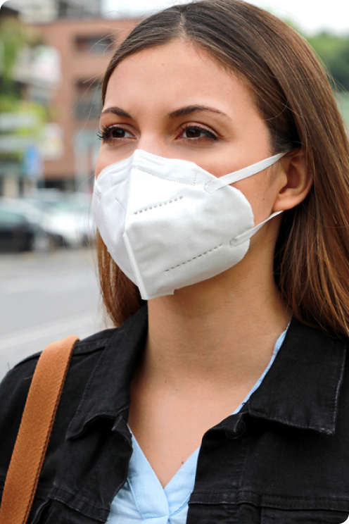
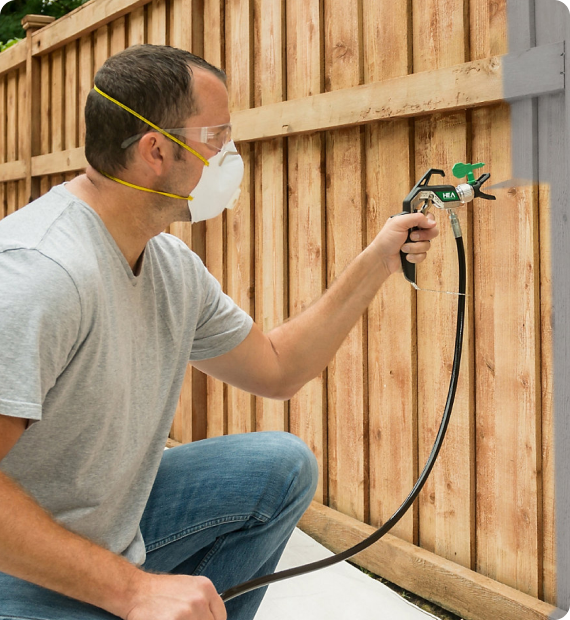
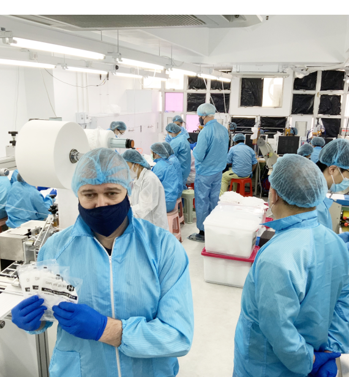
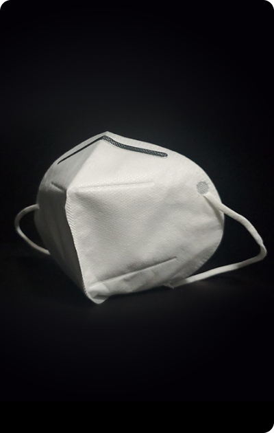
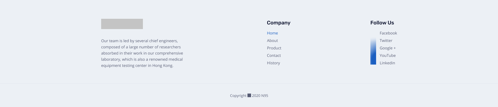

-
3M N95 masks
Protective Face Masks
We offer the fast delivery wholesale selection of N95 masks and surgical masks, featuring FDA-approved quality and 2 – 5 days delivery, our wholesale face masks are ideal for influenza or novel coronavirus prevention.
-

-
Full-Service Shipping
From picking to custom-crating to domestic and international shipping, we handle it all for you.
-
Multi-Point Inspection
To ensure quality, our team of HTM professionals fully assess and evaluate all equipment.
-
Professional Product Support
If you have any questions about the equipment, our product specialists are here to help.
-
Secure and Easy Payment Methods
Pay your way, whether by credit card, PayPal or the redemption of earned credits.
-
N95 Respirators
The N95 mask is a form of respiratory protective wear worn over the nose and mouth to help minimise the chance of inhaling airborne particles like viruses and other germs. It is a disposable mask made from synthetic polymer fibres produced in a highly specialised process called melt blowing. During this process, the inner layer of the N95 mask is created which forms the filtration layer capable of filtering out at least 95% of airborne particles when worn correctly.
During outbreaks of respiratory illnesses and during periods of intense air pollution, wearing N95 masks has been shown to help reduce the inhalation of compromised air, filtering out nasty pathogens which lead to illness or which can aggravate existing respiratory problems. Maintaining clear and unhindered respiration is vitally important for remaining fit and healthy and people with pre-existing conditions or respiratory fragility can particularly benefit from wearing face masks while they are out in public and unable to control the breathing environments that they find themselves in. -

N95 Respirators In Industrial And Health Care Settings
Most N95 respirators are manufactured for use in construction and other industrial type jobs that expose workers to dust and small particles. They are regulated by the National Personal Protective Technology Laboratory (NPPTL) in the National Institute for Occupational Safety and Health (NIOSH), which is part of the Centers for Disease Control and Prevention (CDC).
However, some N95 respirators are intended for use in a health care setting. Specifically, single-use, disposable respiratory protective devices used and worn by health care personnel during procedures to protect both the patient and health care personnel from the transfer of microorganisms, body fluids, and particulate material. These surgical N95 respirators are class II devices regulated by the FDA, under 21 CFR 878.4040, and CDC NIOSH under 42 CFR Part 84.
-

Given the praised reputation and reliable quality within the industry, we have also established preliminary business agreements with some hospitals, local governments and medical institutions in Guangdong Province.
-
After years of development, Health Pro has reached stable long-term cooperation with many hospitals and medical institutions in Hong Kong.
We are keenly looking forward to expand our market in Mainland China and overseas in the future, as we have strong beliefs in our products.
Proudly Made in Hong Kong
Our factory is located in Hong Kong.
Equipped with machines and assembly line of the best quality on the market to ensure quality control.
Our Lab Certification
- 
-
Reasons To Choose Our Products
All products of Health Pro have obtained the certifications issued by national specialized agencies and testing laboratories. They have also passed the quality inspection of several international famous testing institutions. We have absolute confidence that every product of Health Pro is a of the top quality.
Industry leader
If you have any questions about the equipment, our product specialists are here to help, specialists are here.
Innovation 3 led development
If you have any questions about the equipment, our product specialists are here to help.
To create a safer tomorrow for all
If you have any questions about the equipment, our product specialists are here to help.
To protect and to improve living quality for all
If you have any questions about the equipment, our product specialists are here to help.
Get One Step Ahead Of Disease
Imperdiet aliquet est vel nulla turpis eu consequat ullamcorper a egestas suspendisse faucibus eu velit, phasellus pulvinar lorem et libero et tortor, sapien nulla.
-
Address
123 5th Avenue, New York, US -
Call Us
+1 123 456 7890 -
Email Us
info@example.com
 -